Que es Proxmox?
Proxmox es un software de virtualización basado en Debian. Es muy parecido a VMWare, con una interfaz intuitiva.
¿Dónde descargamos Proxmox?
Para descargarlo, nos dirigiremos a la página oficial y entraremos en Downloads. Nos descargamos la última versión:
Como instalar Proxmox?
- El primer paso que realizamos es descargar la iso de Proxmox.
Link de descarga → proxmox.comEn nuestro caso, la iso nos la dió el profesor. Hay dos formas de montar la iso:
1.- En un disco.
2.- Crear un USB ejecutable.
Cualquiera de las dos formas es válida. Lo conectamos al servidor y comenzamos la instalación -
Cuando arrancamos se nos muestra una primera pantalla en donde encontramos un menú con diferentes opciones
• Instalar Proxmox VE.
• Instalar Proxmox VE, pero en modo depuración.
• Recuperar el sector de arranque del disco.
• Comprobar la integridad de la memoria del equipo.
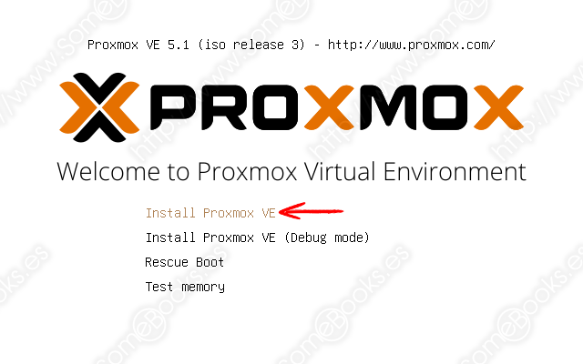 En este caso elegiremos la primera opcion(Install Proxmox VE) y a continuacion veremos como se inicia el arranque del sistema - Esperamos hasta que deje de carga el texto y le damos a enter para cargar la siguiente pantalla. 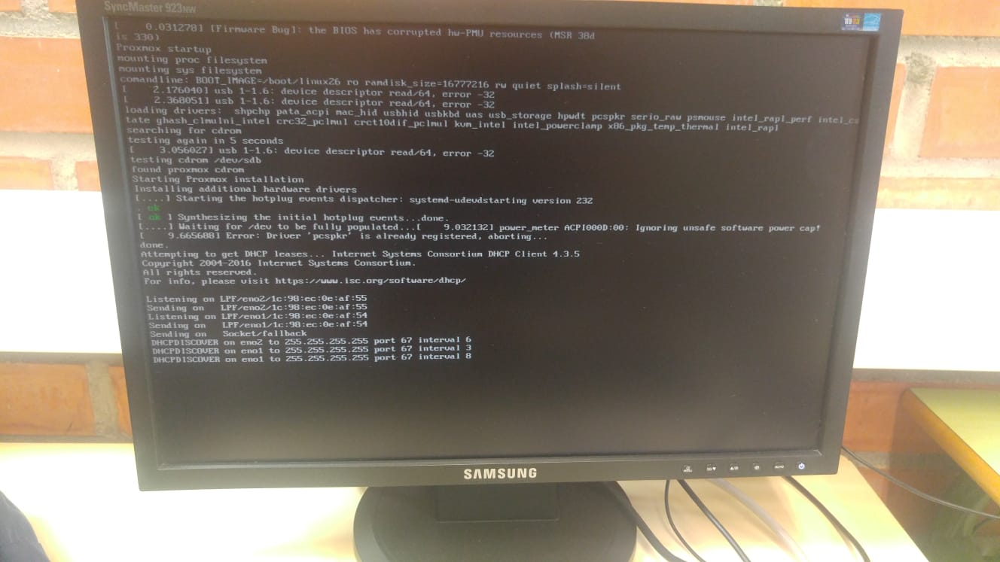
- La siguiente pantalla es un acuerdo de licencia que hay que aceptar para poder continuar. 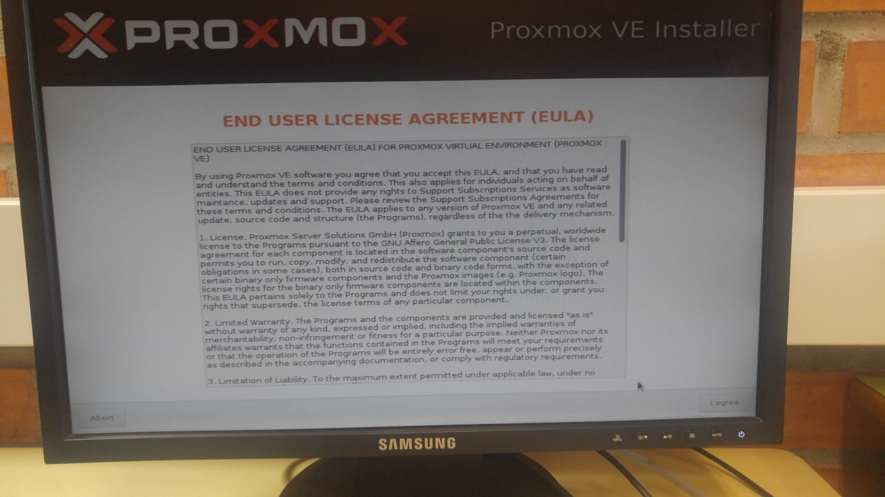
- Lo siguiente que nos pregunta es donde queremos instalar Proxmox. Si tu ordenador dispone de más de un disco, sólo tendrás que desplegar la lista y elegir el adecuado. Elegimos el espacio del servidor y le damos a Next. 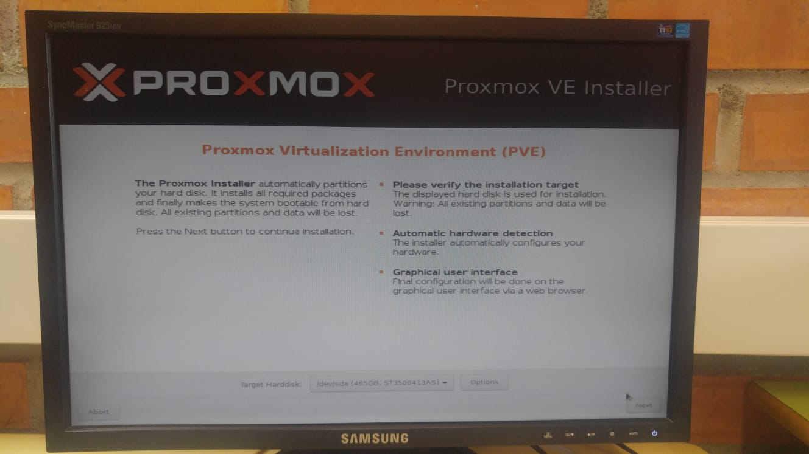
- Elegimos el país, el horario y el idioma del teclado y le damos a Next. 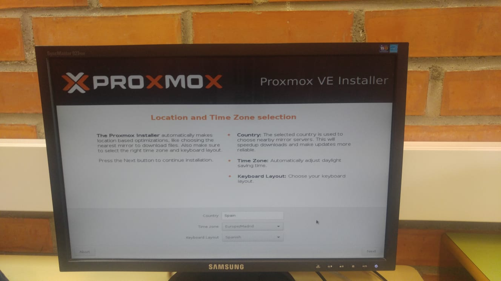
-
Ingresamos la contraseña para el usuario root con el que nos loguearemos después. Insertamos un correo, por si se da el caso de que el servidor tenga algún error nos lo notifiquen.
- Contraseña: admin
-
Le damos a Next y lo siguiente que tenemos que rellenar es:
• FQDN (Fully Qualified Domain Name / Hostname / Nombre del dominio ): Es el nombre completo de la máquina es decir el nombre + dominio al que pertenece.
• Dirección IP: Si en la red que estamos hay un servidor DHCP la IP se asignará automáticamente, si nos gusta esa dirección la dejamos tal cual, o si queremos cambiarla la podemos hacer siempre y cuando pertenezca a la misma red en la que nos encontramos.
• Máscara: Una acorde a nuestra red.
• Gateway: La dirección por donde saldremos a Internet.
• Servidor DNS: Es importante que tengamos salida a Internet para poder hacer una actualización por lo menos la primera vez después de instalarlo, ya que dependiendo de la fecha que descarguemos el software se habrán echo mejoras que sería bueno tenerla actualizadas, más que nada por seguridad.
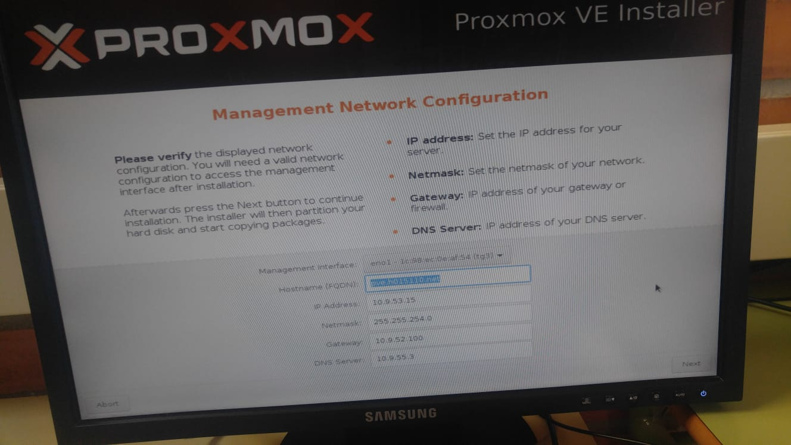Lo siguiente es un ejemplo:
- Nombre del dominio: pve.h015110.net
- Dirección IP: 10.9.53.15
- Máscara: 255.255.254.0
- Gateway: 10.9.52.100
- DNS: 10.9.55.3
- Le damos a Next y esperamos que se instale. Una vez que la instalación se complete, reiniciaremos el servidor. 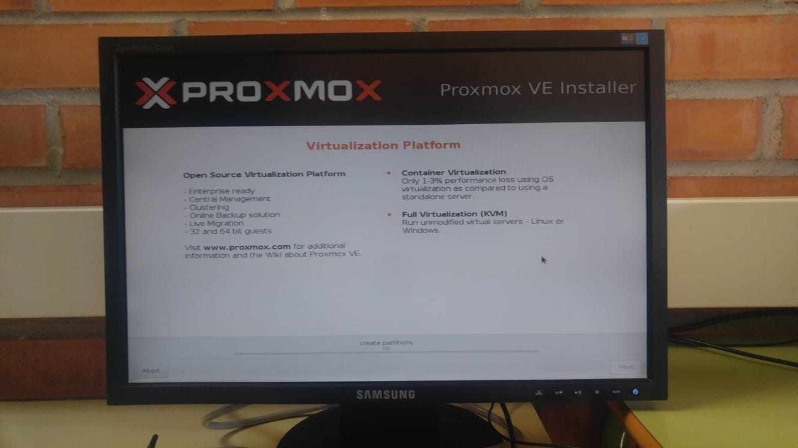
-
Al reiniciarse la máquina nos encontramos con un Servidor Debian en el que nos tenemos que logear con el usurio root y la contraseña que le dimos en la instalación. También podemos darnos cuenta que nos muestra la dirección del servidor web con el que nos podemos conectar desde un navegador para poder hacer las configuraciones de una forma más sencilla.
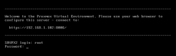- Nombre: root
- Contraseña: admin
-
En este video te enseñamos el tutorial desde una maquina virtual.
Primeros pasos
Ahora que ya tenemos nuestro servidor actualizado es necesario hacer las últimas revisiones para ver si está todo correcto.Tenemos dos forma de entrar a la administración de Proxmox:
• Consola SSH:
• Mediante acceso web: Es la que nosotros usaremos.
Para acceder al Servidor Proxmox lo podemos hacer desde cualquier dispositivo que cuente con un navegador. Para ello indicamos la ip del servidor más el puerto correspondiente. Por defecto el puerto que usa Proxmox es el 8006, que por seguridad lo debemos cambiar cuanto antes.
La primera vez que ingresamos la dirección IP junto con el puerto nos saldrá un aviso de advertencia.
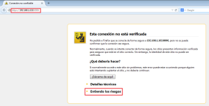
Lo que tenemos que hacer es indicar al navegador de que confiamos en este servidor y añadimos una excepción, para que no nos vuelva a dar esta advertencia. 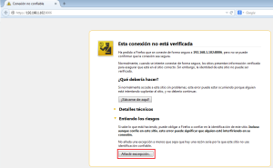 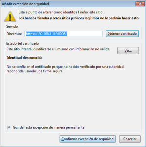
Confirmamos y vemos que nos muestra una pantalla en la que nos tenemos que loguear con el usuario root y la contraseña indicada en la instalación. 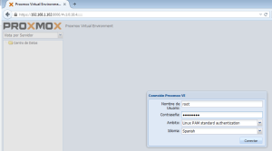 Y ya disponemos de un Servidor Proxmox listo para virtualizar. 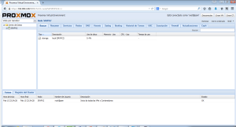